Arthas 是Alibaba 开源的一款线上诊断工具，相比Java 自带的jinfo, jmap,jstat 等工具更方便(起码不用记那么多参数)，而且利用字节码增强技术，可以很好的对线上的问题进行定位以及解决，不用再为生产或者测试环境无法debug而感到无能为力。其实Arthas的官方用户手册已经写得很不错了，大多数用户看他的官方说明就能很好的使用这款工具了。传送门:Arthas 官方使用手册，写这个系列的文章完全是记录一下自己的使用感受，我更建议去看官方的手册。
Arthas 解决什么问题
- 1.当线上出现bug时，由于线上的环境问题无法进行debug，而线下无法重现此bug时。
- 2.当自己新修改的代码没有执行时，究竟是业务逻辑问题，还是没有成功commit 上去。
- 3.当想查看Jvm相关参数的时候，java自带的命令太过繁杂，有没有一个统一视角来查看这些JVM的实时状态。
- 4.当自己想查看系统的运行状况时，想要查看cpu，内存等敏感参数的使用情况。
Arthas 的安装与启动
想必很多开发人员也有上面的一些疑问，我们现在就来安装和启动Arthas。环境说明:我们这里以linux的操作为主，windows 和 mac 系统的安装官网也有，我们不再做操作。Jdk 版本为 1.7.0_67
arthas 支持linux 上一键安装，安装命令: curl -L https://alibaba.github.io/arthas/install.sh | sh 下载后我们可以看到当前目录下有一个as.sh 脚本文件。为了更好的操作它，我们可以将它放入 $path 中（如果遇到 curl: (35) SSL connect error 错误 可以先执行yum install nss）.
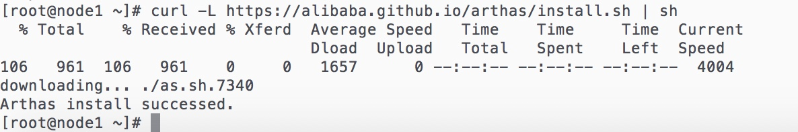
下载后运行在当前目录下运行: ./as.sh
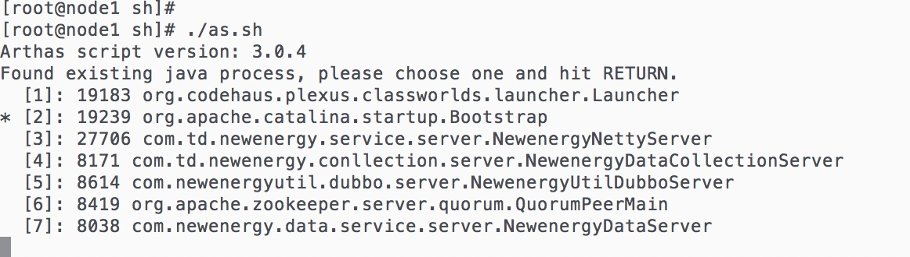
我们可以看到，运行脚本后出现java 进程列表，当我们想看哪一个进程的信息时，选择进行的序号(每次使用完Arthas，都要记得使用shutdown 命令退出，不然下次进入后，就算选择了其他进程的序号，都还是会进入到上一次未 shutdown 的进程中，这一点对新手不是太友好。)
我们选择序号3 的进程(这里可能会有更新)，如图:
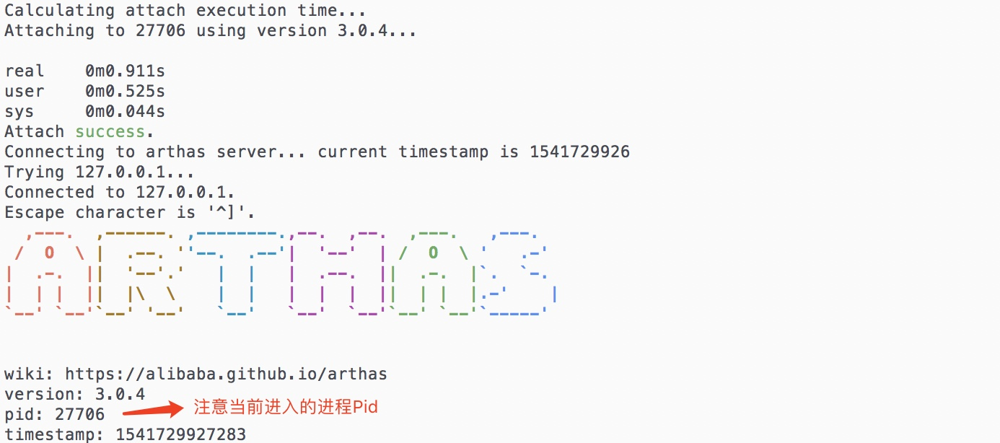
我们需要注意我们当前进行进行的pid 防止上面提到的未shutdown的问题，进入错误的进程。
至此我们已经完成了Arthas 的安装与启动。
Arthas JVM 相关命令
我们Arthas 的命令还是以功能性分类描述，下面是JVM 相关命令的
- 1.dashboard -> 当前系统的实时数据面板
- 2.thread -> 当前JVM 线程堆栈信息
- 3.jvm -> 查看当前JVM 的信息
- 4.sysprop -> 查看和修改JVM的系统属性
- 5.getstatic -> 查看类的静态属性
dashboard 命令
我们在已经进入进程的情况下，输入dashboard，屏幕会持续输出当前系统的实时数据面板(想要停止输出可以按 ctrl+c )进程实时信息面板主要分为3大块，包括线程，内存和GC，系统信息 如图所示(想要更详细的字段说明可以上官网查看。)
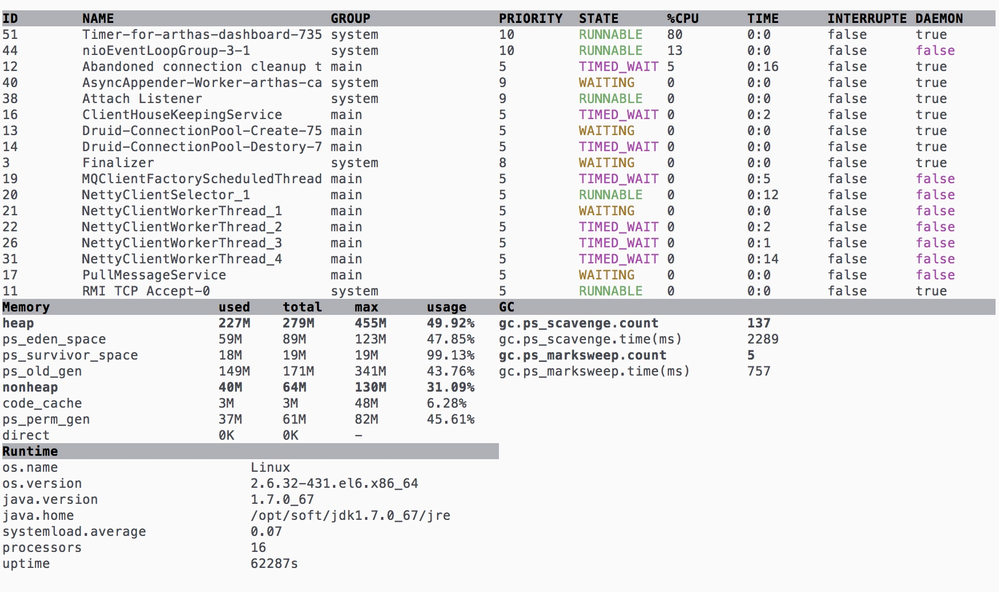
使用建议: 当想要大致看到系统线程的运行状态，占用资源 和JVM 的堆，新生代，老年代的使用情况，GC的信息，以及java 版本信息都可以用此命令。
thread 命令
thread 命令可以查看当前线程的信息，查看线程的堆栈。
参数说明:
| 参数名称 | 参数说明 |
|---|---|
| id | 线程id |
| [n] | 指定最忙的n个线程并打印 |
| [b] | 找出当前阻塞其他线程的线程 |
| [i] | 打印时间间隔，单位为毫秒 |
使用示例:
我们先写好示例代码:1
2
3
4
5
6
7
8
9
10
11
12
13
14
15
16
17
18
19
20
21
22
23
24
25
26
27
28
29
30
31
32
33
34public class Demo {
public static void main(String[] args){
for (int i = 0; i < 10; i++){
SleepThread sleepThread = new SleepThread("t"+i);
sleepThread.start();
/*try {
sleepThread.join();
} catch (InterruptedException e) {
e.printStackTrace();
}*/
}
}
static class SleepThread extends Thread{
private String threadName;
public SleepThread(String threadName) {
this.threadName = threadName;
}
public void run() {
synchronized (SleepThread.class){
sleep();
}
}
private void sleep(){
System.out.println("当前线程:"+threadName+"锁住30秒");
try {
Thread.sleep(30000);
} catch (InterruptedException e) {
e.printStackTrace();
}
}
}
}
代码准备好之后我们可以利用 javac Demo.java进行编译，生产class 文件之后运行java Demo 命令运行程序。如图:
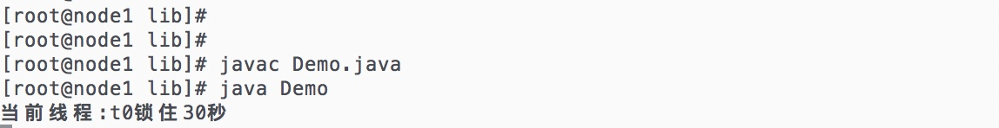
我们使用as.sh 进入Demo的进程，输入thread 命令:
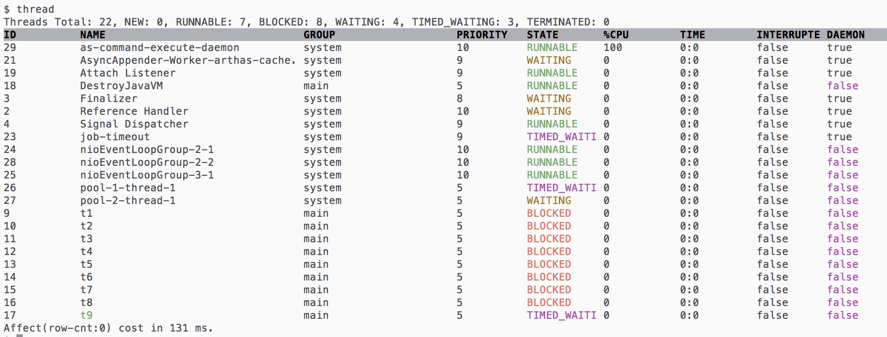
通过thread 命令我们可以看到这个进程所有线程的状态。包括各个线程状态的统计，线程的名称，分组，状态，占用CPU率，是否中断，是否是守护线程等信息。
输入thread -b 命令查看正在阻塞的线程:
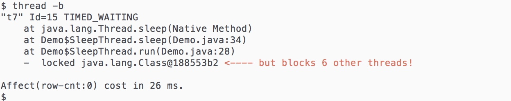
输入thread -n 3 命令查看最忙的三个线程:
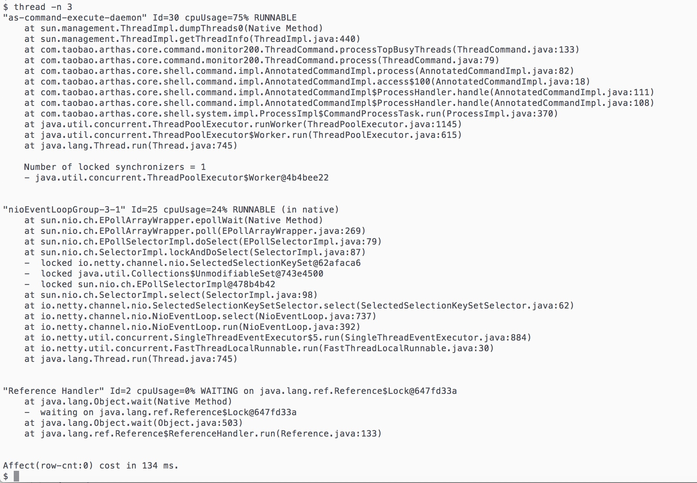
使用建议:thread 可以说对线程的监控相对全面，如果系统业务卡死，可以先来线程这边看看是否有阻塞情况。
jvm 命令
输入jvm 命令 屏幕会打印当前JVM 信息，JVM 信息包括 运行信息, 类加载信息， 编译信息， GC信息， 新生代老年代信息， 内存信息，操作系统的信息， 线程信息。
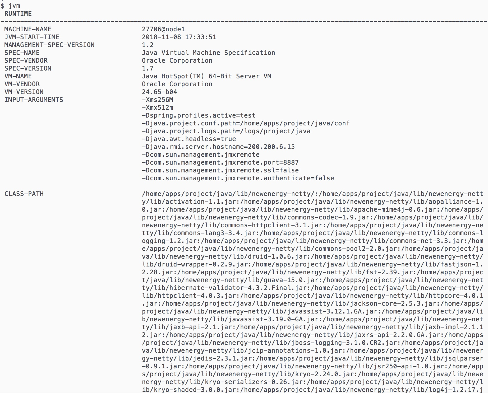
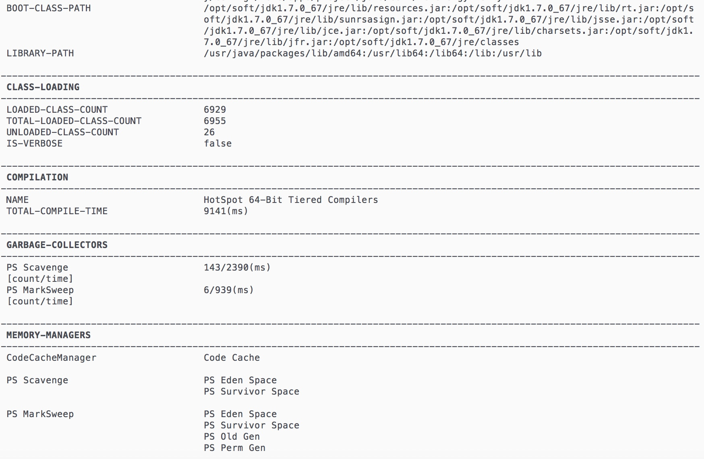
sysprop 命令
sysprop 可以 查看所有属性， 查看单个属性， 修改单个属性
示例:
查看所有属性: sysprop
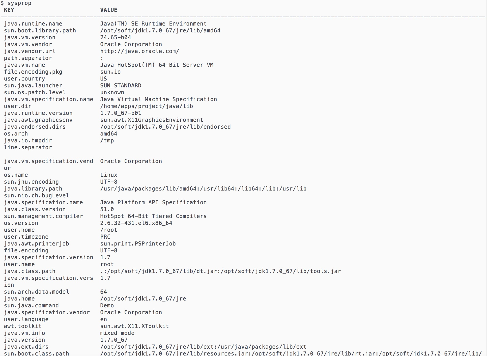
查看单个属性: sysprop key
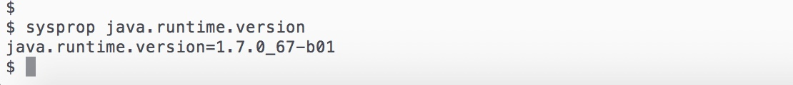
修改单个属性: sysprop key value (示例略)
getstatic 命令
getstatic 可以查看类的静态属性
用法示例: getstatic class_name field_name
我们下面的示例代码编译并运行。1
2
3
4
5
6
7
8
9
10
11
12
13
14
15
16
17
18
19
20
21
22
23 */
public class StaticDemo {
public Map<String, String> map = new HashMap<String, String>(){{put("111","111");}};
private Integer value1 = 1;
private static Integer value2 = 2;
public static void main(String[] args){
Object lock = new Object();
try {
synchronized (lock){
while (true){
lock.wait();
}
}
} catch (InterruptedException e) {
e.printStackTrace();
}
System.out.print("进程退出");
}
}
进入进程后，我们分别输入getstatic StaticDemo value1 以及 getstatic StaticDemo value2 (注意class_name为包全名，示例代码我放在默认包下面，所以没有包名)。
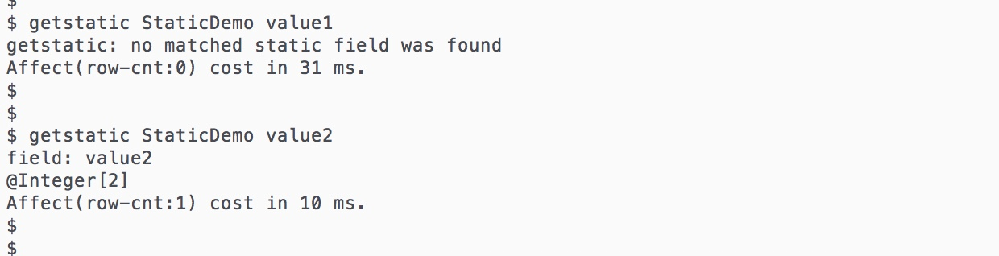
从结果上我们可以看到，由于value1 不是static 变量，所以getstatic 命令无法查看，而value2 是static 变量，所以可以查看。
我们再来看一下map的值， 输入getstatic StaticDemo map ‘entrySet().iterator.{? #this.key==”111”}’
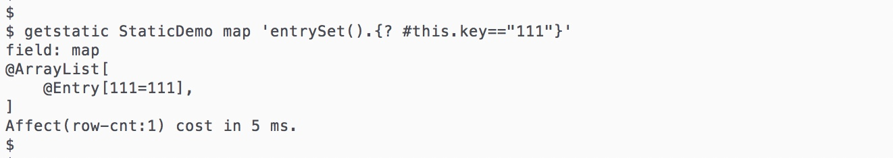
小结
至此，我们这个系列的第一篇文章讲了Arthas 的安装以及启动，还有JVM 相关命令的使用示例。下一篇我们会接着讲类加载相关命令和方法监控跟踪相关命令。